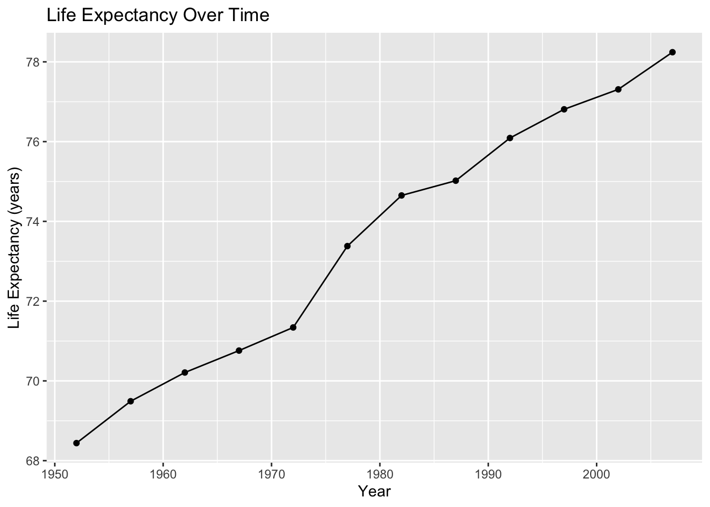
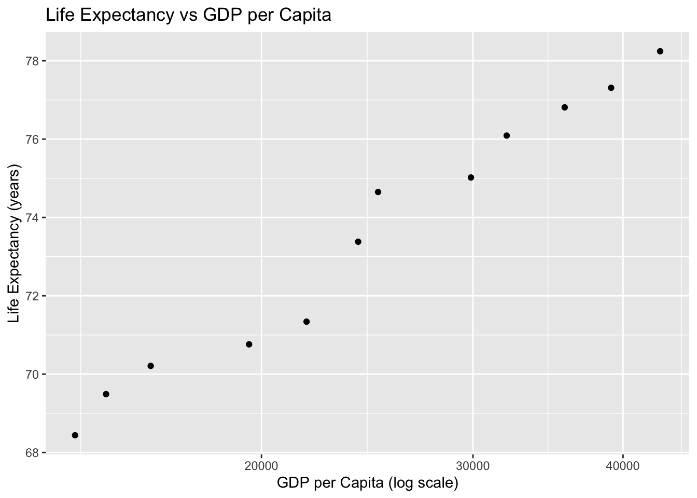

# install.packages("tidyverse")
# install.packages("gapminder")Project 1 Lesson: Exploratory Data Story with Gapminder
Purpose of Project 1
Project 1 is designed to help you practice the core workflow of this course before working with complex health datasets.
This project focuses on:
- working comfortably in R and Quarto
- exploring a dataset using descriptive statistics
- creating clear data visualizations
- writing interpretations in plain public health language
- using inline R code to report values reproducibly
This is not a modeling project. The goal is exploration, clarity, and workflow.
Why we use Gapminder for Project 1
The Gapminder dataset is:
- clean and well-documented
- structured in tidy format
- widely used in teaching data science
- rich enough to tell meaningful public health stories
Using Gapminder allows you to focus on skills, not data complexity. These same skills will transfer directly to NHANES later in the course.
What you are expected to demonstrate
By the end of Project 1, you should be able to:
- work entirely in a Quarto document
- load and explore a dataset
- compute descriptive summaries
- create at least two well-labeled figures
- interpret patterns in writing
- use inline code for reported values
Effort, clarity, and reproducibility matter more than sophistication.
Project setup
Create a new Quarto document named:
project1-lastname.qmdAt the top of your document, include a clear title and your name.
Loading the data
Install packages if needed (only once):
Load packages each session:
library(tidyverse)
library(gapminder)Load the dataset:
gapminder# A tibble: 1,704 × 6
country continent year lifeExp pop gdpPercap
<fct> <fct> <int> <dbl> <int> <dbl>
1 Afghanistan Asia 1952 28.8 8425333 779.
2 Afghanistan Asia 1957 30.3 9240934 821.
3 Afghanistan Asia 1962 32.0 10267083 853.
4 Afghanistan Asia 1967 34.0 11537966 836.
5 Afghanistan Asia 1972 36.1 13079460 740.
6 Afghanistan Asia 1977 38.4 14880372 786.
7 Afghanistan Asia 1982 39.9 12881816 978.
8 Afghanistan Asia 1987 40.8 13867957 852.
9 Afghanistan Asia 1992 41.7 16317921 649.
10 Afghanistan Asia 1997 41.8 22227415 635.
# ℹ 1,694 more rowsChoosing a focus
You will be assigned a country and you will be comparing all results to the United States.
Once selected, filter the dataset.
country_df <- gapminder %>%
filter(country == "United States")
country_df# A tibble: 12 × 6
country continent year lifeExp pop gdpPercap
<fct> <fct> <int> <dbl> <int> <dbl>
1 United States Americas 1952 68.4 157553000 13990.
2 United States Americas 1957 69.5 171984000 14847.
3 United States Americas 1962 70.2 186538000 16173.
4 United States Americas 1967 70.8 198712000 19530.
5 United States Americas 1972 71.3 209896000 21806.
6 United States Americas 1977 73.4 220239000 24073.
7 United States Americas 1982 74.6 232187835 25010.
8 United States Americas 1987 75.0 242803533 29884.
9 United States Americas 1992 76.1 256894189 32004.
10 United States Americas 1997 76.8 272911760 35767.
11 United States Americas 2002 77.3 287675526 39097.
12 United States Americas 2007 78.2 301139947 42952.Your entire project should focus on one country and the clearly defined comparison.
Section 1: Introduction
In your Introduction section, briefly describe:
- the country you are examining
- why it is of interest from a public health perspective
- what outcomes you plan to explore
This section should be written in complete sentences and should not include code.
Section 2: Descriptive exploration
Start by computing basic descriptive statistics.
mean_lifeExp <- mean(country_df$lifeExp)
sd_lifeExp <- sd(country_df$lifeExp)
n_years <- length(unique(country_df$year))Report values using inline code, not by typing numbers manually.
Example:
Across 12 years of available data, the mean life expectancy was 73.5 years (SD = 3.3).
Section 3: Visualizations
You must include at least two figures.
Required figure: trend over time
ggplot(country_df, aes(x = year, y = lifeExp)) +
geom_line() +
geom_point() +
labs(
title = "Life Expectancy Over Time",
x = "Year",
y = "Life Expectancy (years)"
)
Optional second figure (examples)
You may choose one of the following:
- GDP per capita vs life expectancy
- population trends over time
- comparison with another country
Example:
ggplot(country_df,
aes(
x = gdpPercap,
y = lifeExp)
) +
geom_point() +
scale_x_log10() +
labs(
title = "Life Expectancy vs GDP per Capita",
x = "GDP per Capita (log scale)",
y = "Life Expectancy (years)"
)
Writing interpretation paragraphs
Every figure must be followed by a short interpretation paragraph.
A strong interpretation includes:
- what the plot shows
- notable trends or changes
- a public health interpretation
- a brief limitation
Example structure:
- What do you observe?
- When do changes occur?
- Why might this matter for population health?
Do not describe code or aesthetics. Focus on meaning.
Section 4: Data quality and limitations
Include a short section discussing:
- missingness (if any)
- time coverage of the data
- what the data cannot tell us
This helps build good scientific habits early.
Section 5: Reflection
Conclude with a brief reflection addressing:
- what you learned from exploring the data
- what surprised you
- what questions you would explore next
This section is about thinking, not technical skill.
Formatting and reproducibility requirements
Your project must:
- be written entirely in Quarto
- render without errors
- use inline code for reported values
- include labeled figures
- avoid screenshots of plots
- be clearly organized with headings
- have peer-reviewed sources (at least 8)
Warning
Projects that do not render cleanly cannot be graded.
Submission instructions
Submit:
- the rendered document (word)
- the
.qmdsource file
Both are required.
How this project prepares you for the rest of the course
Project 1 builds the foundation for:
- Project 2 (cleaning NHANES data)
- Project 3 (modeling and inference)
- Project 4 (final manuscript)
The workflow you practice here will be reused all semester.
Key takeaways
Project 1 is about learning how to explore data, write clearly, and work reproducibly in Quarto. Focus on effort, clarity, and honest interpretation. You are not expected to be an expert — you are expected to engage.
Looking ahead
After Project 1, we will transition to real U.S. health data and begin preparing datasets for modeling and inference.